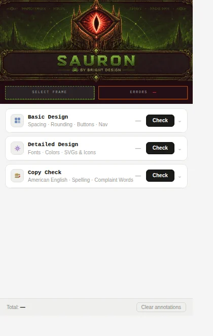
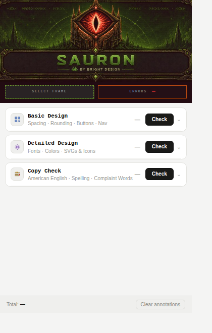

A Figma plugin that checks designs for copy, colour and spacing errors before they reach dev. Built solo in eight weeks and published to the Figma Community.
When a designer reviews another designer's work, they're looking at the flow. The hierarchy. Whether the screen makes sense. They're not stopping to check if every CTA uses the right hex value. They're not reading every word to find the one that says "utilize" instead of "use." They're not measuring every padding value to confirm it's on the 4px rhythm.
This is what slips through. Not the obvious things. The small ones.
These aren't caught in peer review because peer review isn't designed to catch them. They get caught in dev. Or in a visual QA (VQA) pass that runs days later. Or they ship.
Sauron is the check that happens before any of that.
A Figma plugin acting as an automated peer reviewer.


The design director's AI Product Design Workflow list in March 2026. Two items assigned to me: Visual QA and American Spelling Check. The brief was a line item. No spec, no prior tool, no reference.
I built it solo. The plugin runs directly inside Figma, reads the selected frames, and checks them against the rules. The prohibited words list and compliance terms pull from an external sheet. Colours check against the design system token library. Spacing flags anything not divisible by 4.
Announced to the team on May 14. Published to the Figma Community on May 19, alongside the Screen Namer plugin. Two tools, same day. Both built solo.
Shreyo Debnath · Product Designer